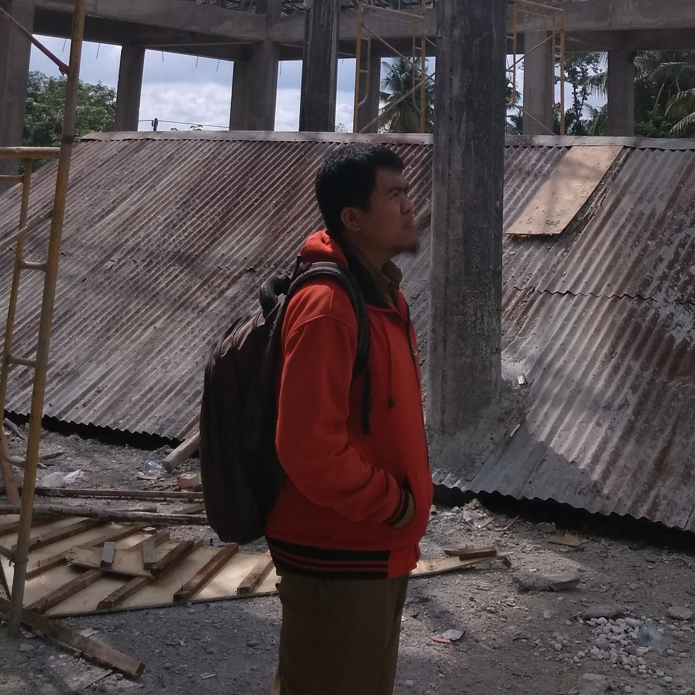
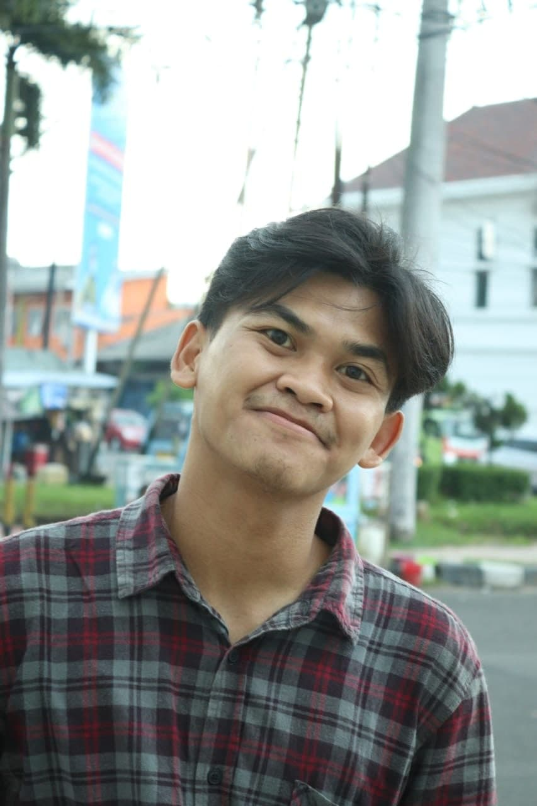
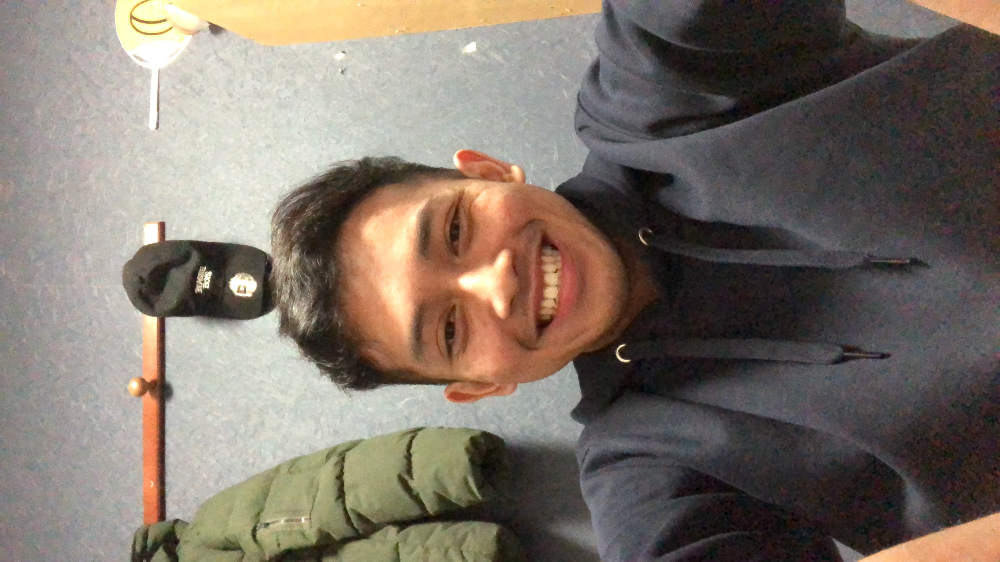
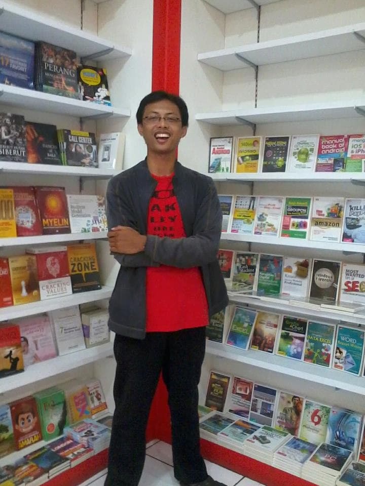
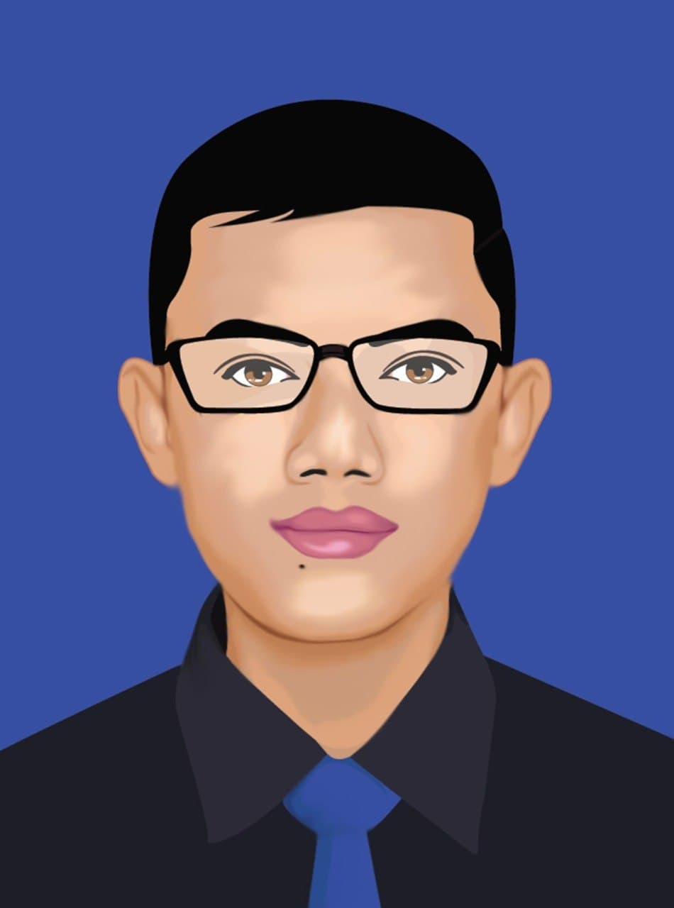

Kami adalah kelompok A07 yang berisikan anggota yang berkeinginan belajar tentang pemrograman walaupun latar belakang pendidikan kami bukan dari IT
Rizki Sahputra
Nama saya Rizki Sahputra, usia 26 tahun. Lulusan Teknik Sipil Universitas Riau. Tinggal di Pekanbaru. Pekerjaan PNS. Sehari-hari berkutat dengan aspal, beton dan pipa. Kata orang orang PNS idaman mertua, tapi kenyataannya saya masih jom..(Lihat Selengkapnya)
Tegar Tri Sawali
Nama saya Tegar Tri Sawali, asal daerah Cirebon tetapi saat ini saya berdomisili di kota Bandung karena sedang menempuh pendidikan S1 Prodi Fisika Nuklir. Saya menyukai kegiatan memasak, tetapi di bandingkan memasak saya lebih menyukai makannya.
Muhammad Irfan
Nama saya Muhammad Irfan, asal daerah Semarang. Hobi kegiatan olahraga dan olahjiwa. Pekerjaan freelance. Saat ini masih menunggu untuk bisa magang kembali di Jepang
Mochammad Zaenuri
Saya Mochamad Zaenuri, asal dari Kota Pekalongan, yang sering disebut juga dengan Kota Batik, saat ini berkerja dibidang percetakan. walapun pemrograman adalah hal baru dan bikin pening, tetapi menarik untuk di pelajari. Hobi memelihara ikan guppy. Salam kenal untuk semuanya.
Rahmat Alhakim
Berpengalaman 3+ tahun dalam graphic design, dengan menguasai beragam software seperti Adobe Illustrator, CorelDRAW, Adobe Photoshop. Berpengalaman dalam pembuatan storyboard, mock-up, dan visual untuk sosial media, web, dan aset lain untuk kebutuhan pemasaran.